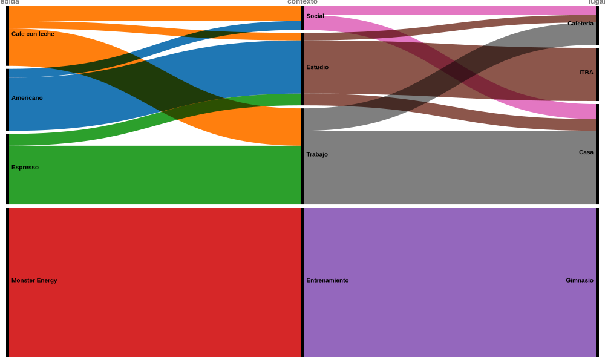

Visualizacion de la Informacion ITBATP1 Personal Data Francisco Cattaneo
Dos semanas tomando cafeina
Registre cada cafe y cada lata entre el 17 y el 30 de agosto de 2026: a que hora, para que y cuanta cafeina tenia.
37tomas registradas
27cafes
10latas
262mg de cafeina por dia
¿Cuanta cafeina consumo por dia?
Total diario en miligramos, separado entre cafe y energizante. Grafico interactivo hecho con Flourish.
El pico es el viernes 21, con tres cafes y una lata. Los domingos, sin entrenamiento ni trabajo, el consumo cae a menos de un cuarto del promedio. El cafe sostiene el piso de casi todos los dias; el energizante aparece o no aparece, sin termino medio.
¿Que tomo para cada cosa?
Miligramos de cafeina segun la bebida, el motivo y el lugar. Diagrama aluvial hecho con RAWGraphs.

El energizante viaja por un solo hilo: 1600 mg que van enteros a entrenamiento, en el gimnasio. Los cafes en cambio se reparten entre trabajo, estudio y encuentros sociales, y cambian de lugar segun el momento del dia.
¿Que bebida aporta mas cafeina?
Catalogo de bebidas registradas, con la cafeina que aporta cada una en las dos semanas. Tabla hecha con Datawrapper.
La lata aparece 10 veces contra 27 cafes, pero explica el 44% de toda la cafeina. Esta tabla es tambien la referencia metodologica del trabajo: de aca salen los miligramos que alimentan el resto de los graficos.